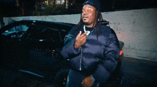

This Is My Portfolio
Hello This Is About Me
My name is Jaidyn Kentcy (aka. Kana) im 16 yrs old and i'll soon be a junior. I'm 6'2 workout and play video games. I like coding, sleeping, working out, anime and weapons. When I was younger I wanted to be an arms dealer that would go from country to country and sell a variety of weapons to any and everyone. But as I grew up the dream faded and I changed my dream to becoming the largest CEO or building the largest empire in history.
This Is My Experience
My experience in the hidden genius project has been pretty positive all around
and while my fellow co-workers are useless it is definitely beneficial to have people like them learning coding skills or they would be in the trenches. And from a software developer perspective I think this program was beneficial to advance my premature coding and developing skills.
This is my Goals
My goals all surround getting bread and staying above the masses due to my love of winning and being on top no matter what it is I choose to do. And while i'll settle for being a CEO my main goal is to systematically reinstate a monarchy into our form of government of which i would regin supreme.
I chose to put Ghostface on my portfolio because I like horror movies and the scream franchise has always been my favorite out of all of the extensive genres.

I chose lucki because he is one of my favorite artists and his lyrics are one I can relate to.

I chose to put isagi on my portfolio because of his ability to adapt his plans and calculate, formulate different ways to succeed no matter what situation he is forced into. As well as his ego, which is relatively high but unlike other charters he can and does back it up. And I can see semblances of that within myself.
I chose Sasuke because he is my favorite anime character in the entire genre and his personality is that of which I bare the most semblance out of most over the top characters in anime. Due to his calm and vindictive personality.
I chose Mr.krabs because he gets money to the point that he can shower in money. And that is something I can and most people can aspire to achieve.
I chose Jin because he is calm, collected as well as versatile no matter who he is up against. And he is a samurai which causes him to use katana’s which I happen to be an expert on. I also like the game “Ghost Of Tsushima” which he hails from.